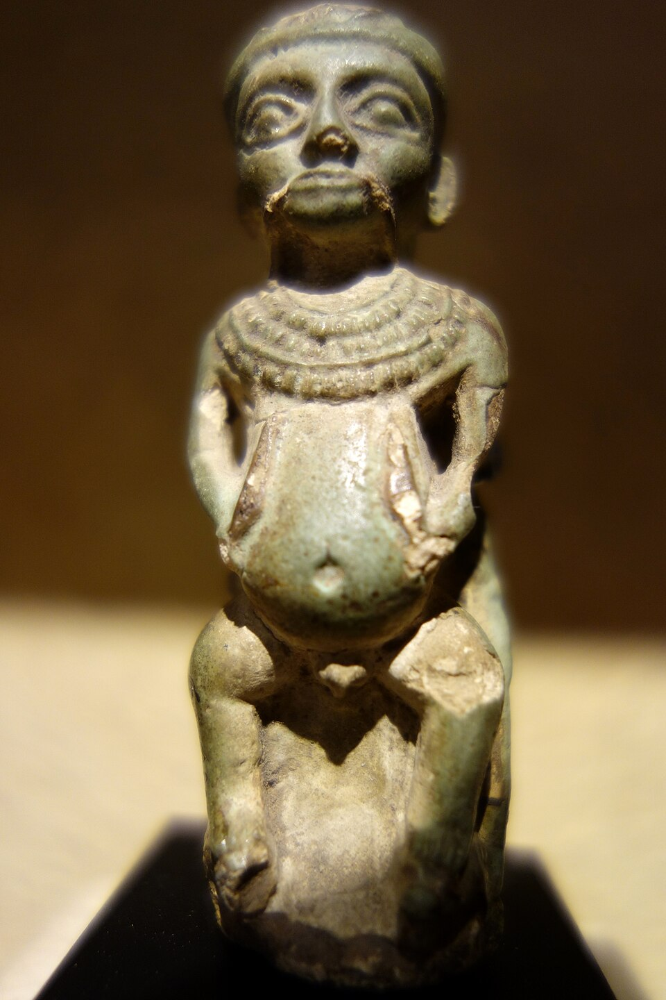

Бес — защитник порога. Он не стоит в великих храмах наравне с Ра и Амоном: его место у изголовья, колыбели и печи — там, где человек беззащитен. Его имя зовут в заклинаниях, его лик режут на подголовниках, стенках снов, чашах и амулетах. Он из тех, кто ближе всех к людям — ближе, чем вся Океанад.
Он карлик с большой головой, часто с высунутым языком, в перьях и львиной шкуре, кривоногий, с головой зверя. В искусстве он почти всегда анфас — редчайшее для Египта исключение: чтобы видеть врага лицом к лицу. Его гримасна уродливость — не злоба, а оборонительный оскал: так отпугивают демона.
Что он охраняет
- Роды — он стоит над роженицей, «поднимает её» из боли; его имя пишут в водах омовения.
- Сон — подголовники с ликом Беса сторожат сновидения: сон — время, когда бесы ближе всего.
- Детей — он кормит их пальцем, играет с ними и не даёт змеям подползти к ложу.
- Дом — его ставят у двери и в нише; он «поворачивает лицо» к тому, кто входит со злом.
Танец, бубен и смех
Бес — бог музыки и пляски: он бьёт в бубен, дует во флейту, трясет трещотками. Его танец — это магия радости, которая сильнее проклятия; в пирах и праздниках его имя звучит как тост за жизнь. Отсюда и его мягкий облик: на сосудах и фаянсе он подмигивает — жизнь должна быть веселой, иначе тьма возьмёт своё.
Где он родился
Ранние следы — в Пунте и у берегов Красного моря: его образ привнесли, вероятно, кочевые народы юго-востока; в Ветхом Царстве он уже — «Бес Великий», охранитель царя. Позднее его имя дали двум «долинам» на востоке: «Хамама» (Бес) звался источник, у которого, по преданию, утешалась Исида после похорон Осириса. Он — бог границы и переходов: между домом и пустыней, между бодрствованием и сном.
Бес в небесном деле
Ночью, когда Ра плывёт по Дуату и Апоп хочет потопить барку, Бес стоит на носу солнечного ковчега копьём против змея. Так карлик, охраняющий колыбель, охраняет и весь мир: одно и то же движение рук — удар по врагу, где бы спящий ни лежал, — в доме ли, на небе ли.
Интересные факты
- Его имя не имеет ясной египетской этимологии: возможно, оно чужое — из восточных языков; его писали со знаком «нога» и «дети».
- Имя Бес давали людям: «Пашер-Бес» — «рождён Бесом», «Та-Бес-анх» — «да будет он жив»; это имя-оберег.
- Птолемеевский «Бес-камер» в храмах Дендеры — комнаты, украшенные ликами карлика: даже в каменных святилищах он оставался «домашним».
- Он — один из немногих, кто терпит смех и телесность: на его рисунках живот, гримаса и танец — священная радость жизни.